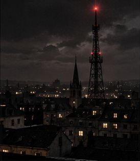
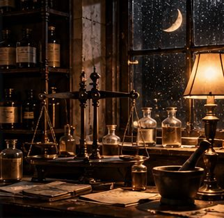

Murder mystery game for at home
An evening of solving a murder together, on the sofa, on one screen.
How it works
Fancy an evening of sleuthing without organising anything? Pick a case, put it on the laptop or TV and solve it together. No game master, no cards, no preparation.
The story cases are closest to a classic murder mystery: suspects who each have their own story, evidence that doesn't add up, and one killer. In the escape rooms you walk around a 3D room yourselves and hunt for the code together.
At least one case of every kind is free, so you can try it first. With the Pro pass (€3.99 once) you can then play every case.
Story cases and escape rooms

Meridian House
A fall down the cellar stairs. Or was it?

The Stopped Clock
Locked in with the body. In 3D.

The Last Candle
Thirteen candles. Four ghosts. One liar.

Night Frequency
Everyone is hiding something. The radio plays on.
Night Train 212
One sleeper train. No stops. One dead by morning.

The Half Moon
The doctor signed heart failure. The pharmacy disagrees.
Sea View
A closed hotel, a storm, a body in the pool.
The Switch Room
Ciphers and documents from a studio, 1963.
How many people can play?
Alone, as a couple or with a group. Play on one big screen so everyone can watch and think along.
Does someone have to be the host?
No. The game tells the story and checks your answer. Everyone plays.
Is it scary?
They are murder cases, so it is tense. The focus is on puzzling and reasoning.
Can we stop and continue later?
Yes. Your progress is saved on the device you play on.
Your own version of a case
Every walk or game can be personalised with your own photos, names and a theme, for € 29.95 including the ticket. Something entirely new, like a route or story of your own? Send a request.